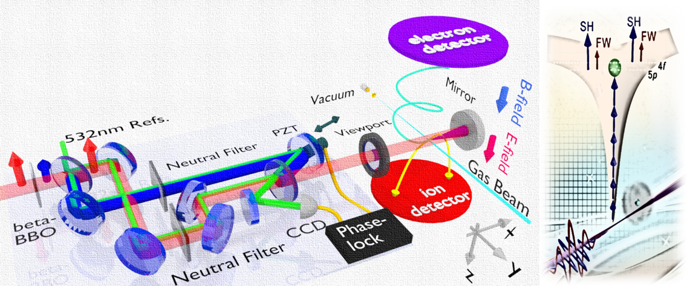
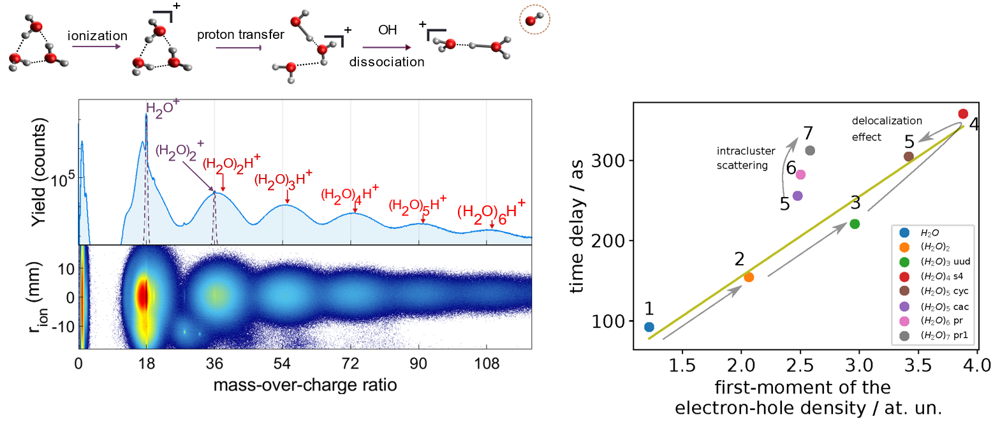
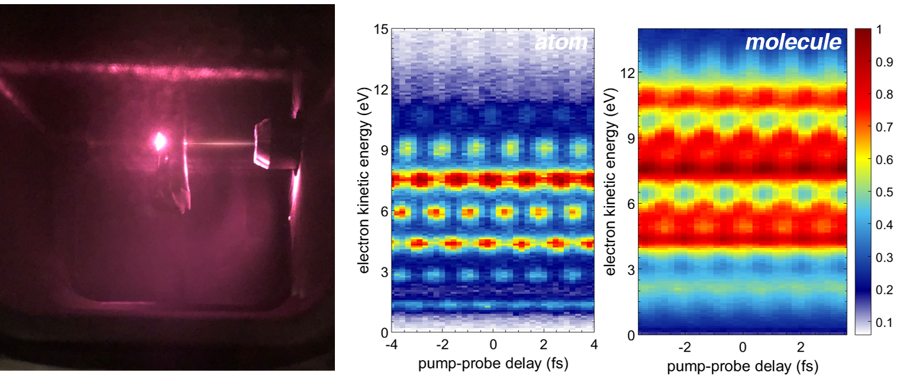
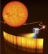

Attosecond Freeman Resonance
A 120 attosecond photoelectron time delay is observed in the strong field Freenman Resonance photoionization through the intermediate states of 4p and 5f of Argon atom.
More

Attosecond Cluster Spectroscopy
A size-resolved photoelectron emission time delay is observed in water clusters which is atributed to the role of electron localization and delocalization as a function of molecular symmetry.
More

Attosecond Shape Resonance
A molecular-frame angular resolved asymmetric photoelectron emission time delay is observed in the vicinity of the Shape Resonance of the diatomic molecule and polyatomic molecule.
More

Ultrafast Pulse generation
A ultrabroad discrete or supercontinuum XUV spectrum can be generated via the protocol of high-harmonic generation to serve as a table-top attoXUV or even soft X-ray light source via further pulse compression in time-domain.
More
Ultrafast Optics
Exploring the shortest time domain
-

A NIR femtosecond pulse is used to drive the generation of the attosecond pulse.
What We Do
To develop advanced experimental techniques for ultrafast optics and attosecond spectroscopy.
- Attosecond pulse generation
- Electron-Ion coincidence measurement
- Atto-Coincidence spectroscopy
Recent invitated talks
Quick glance at the frontier of ultrafast science
© ATTOsecond Spectroscopy. Dr. Xiaochun Gong. All rights reserved.